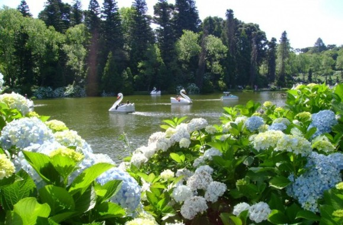
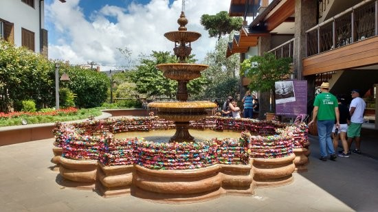
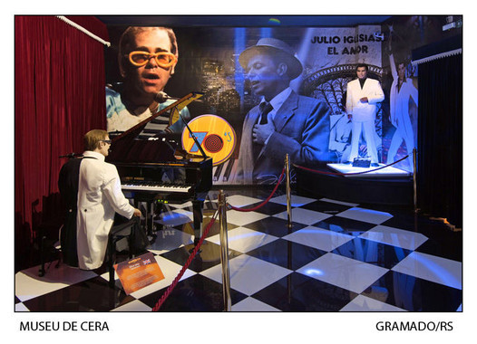

Lago Negro

Um dos cartões turísticos mais conhecidos de Gramado, o Lago Negro é um cenário
extremamente romântico! Com águas profundas, escuras e calmas, cercados de pinheiros,
hortênsias e azaléias, o lago pode ser contornado em agradáveis caminhadas ou num passeio
de bicicleta. Suas margens são locais ideais para um piquenique. Dentro da água, charmosos
pedalinhos conferem um colorido ao local.
Saiba Mais
Fonte do amor eterno

Baseada na famosa Fontana de Trevi, na Itália a Fonte do Amor Eterno reuni milhares de apaixonados
num dos mais belos pontos turísticos da cidade de Gramado.
Impossível falar de romantismo e não falar desta fonte, localizada entre a Igreja Matriz São Pedro
e o Boulevard São Pedro a fonte chama atenção por sua dezena de cadeados coloridos que a deixam
ainda mais charmosa.
Saiba Mais
Mini Mundo

Ao entrar no parque, você será surpreendido pela magia que lhe levará ao mundo único das miniaturas.
Ele revela detalhes de um cotidiano visível em todos os ângulos. Essa é a introdução para o seu roteiro
de visitas!
E se você quiser saber um pouco mais sobre os prédios, habitantes, vegetação, carros, ônibus, trens,
aviões, estradas de ferro, animais e muito mais, tudo em escala 24 vezes menor do que a natural, o
Limpador de Chaminés estará pronto para ajudar! Tem muita história a ser contada!
Saiba Mais
Museu de Cera Dreamland

Inaugurado em 2009, o Dreamland é o primeiro museu de cera da América Latina e o único do Brasil.
Durante o passeio o visitante passa por 18 cenários diferentes que estão distribuídos em uma área de
mais de 1.000 m². Ao todo, são mais de 90 estátuas de cera que reproduzem personagens de filmes e
desenhos animados, músicos, atletas, políticos e celebridades
Saiba Mais